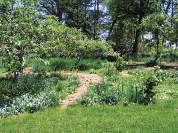
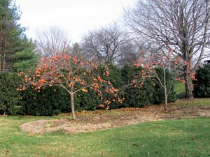

Plant An Edible Forest Garden
Make your garden more productive by learning how to mimic a natural forest.
By Harvey Ussery
August/September 2007
Are you feeling adventurous? Do you want to delve deeper into gardening? Even better, are you thinking of planting an orchard? If so, consider starting a forest garden. With a little planning, you can grow a productive forest garden, full of plants that work together in imitation of a natural forest.
I’m convinced that imitating natural systems is fundamental to any successful effort to raise food. The idea behind forest gardening is that natural forests produce an abundance of food. People the world over have harvested food from the forest, reaping where they did not sow. Forest gardeners imitate the forest’s natural structure to take advantage of this abundance, but they increase yields even further through careful planning and management. The result is a productive fusion of garden, orchard and woodland.
I’ve been exploring the idea of forest gardening for several years, and have recently begun to try it on my own homestead. But before looking at my forest gardening efforts, let’s consider in more detail how a forest garden works.
A GARDEN OF PERENNIALS
One of the main differences between a forest garden and the typical food garden is that forest gardens rely on perennials. Most vegetable gardens include mainly annuals - such as tomatoes, lettuce or radishes.
To understand the difference this makes, consider the role of annual plants in nature. Annuals colonize and cover disturbed ground, because theirs is a high-energy, in-a-hurry lifestyle. In a single season, an annual sprouts from seed, grows to maturity, ripens fruits and seeds, then dies.
Because of the speed and fecundity of the annuals’ lifestyle, they are able to cover patches of bare ground quickly. This energy intensive lifestyle is only possible in full sun - in shade, most annuals will not receive sufficient power for their task. Over time, however, as the annuals protect and build the soil of the disturbed area, they give way to perennials, and these are the plants we want to establish in a forest garden.
Most gardeners are used to a fair amount of disturbance and change in their gardens, from tillage, crop rotation, and so on. In contrast, a natural forest tends to maintain its character over time, and resists rapid change. Changes in plant species do happen in a forest, but they usually take place very slowly. The goal of the forest gardener is to follow these patterns and establish a perennial polyculture from which food is harvested with minimal disturbance.
LAYERS OF THE FOREST
Several groups of perennials form a natural forest. The biggest are the trees, which need the full light of the sun to thrive and support their massive growth. To get that sunlight, they grow high and wide, forming a canopy of leaves to soak up the sun. On the other hand, shrubs have learned how to thrive in the shade of the canopy, where there is less light. Intermediate between these two classes of plants are the vines, growing in the shade but reaching for the full light of the canopy.
Finally, there are the ground plants that cover the forest floor, and like the shrubs, these plants have learned how to live in the canopy’s shade. In a natural forest, these perennials eventually take over the annuals’ duty of keeping the ground covered, but they’re a good deal more conservative in their lifestyle. They have a slower growth rate than the annuals and different strategies for reproducing. For example, they may store energy in their roots to avoid having to start anew from seed in the spring.
Many natural forests fit this pattern, and with judicious selection, we can design gardens that provide the same thing: a compatible, mutually supportive community of food-bearing plants in all three layers. That is the forest garden.
PLANTS THAT WORK TOGETHER
Some plants in a forest garden produce food in the form of nuts and fruits, while the herbaceous plants often have edible stems, leaves or shoots. Many of these plants also provide food and shelter to insects, amphibians and birds. This balance of predator and prey species imitates a natural forest community. However, not all the plants in our forest garden are intended to produce food for us, or even for wildlife. Some might be chosen for their ability to boost soil fertility.
Among the fertility boosting plants are dynamic accumulators - plants such as comfrey with roots that grow deep into the subsoil, “mining” minerals that otherwise would never be tapped, and making them available to shallow-rooted plants.
Other fertility boosting plants are nitrogen fixers. The roots of these plants associate with rhizobial bacteria - a partnership that benefits both the bacteria and the host plant, and that provides a nitrogen boost for other plants in the community as well.
Plants in all three layers of the forest garden can serve as dynamic accumulators or nitrogen fixers. For example, a few excellent dynamic accumulators include black locust trees, flowering dogwoods at the shrub level, and comfrey and dandelions at ground level. Nitrogen fixers include alder and black locust trees; in the shrub layer, bayberry and acacias; and in the herbaceous layer, vetches and perennial clovers.
CHOOSE A STRATEGY
An established forest garden can be very low-maintenance, but it requires a lot of planning before you get started. The best approach to begin a forest garden depends on your individual preferences and circumstances. It’s possible to “start from scratch” - say with a plot of grass sod - and assemble the forest garden as an interlocking set of plantings in all three layers. This option offers the greatest flexibility, and the widest choices of species, design and strategies.
At the other extreme, you might start with an existing plot of woodland, and clear strategic areas to make way for new plantings. This must be approached with care and respect, since cutting down a tree is a serious matter that can’t be undone.
In either case, extensive planning is the key: Making changes to the layout of a vegetable or herb bed is easily done, and even most shrubs can be moved, if done so with care. But once a large tree is established, moving it is not an option.
Another approach to creating a forest garden is to start with an existing orchard and add plantings. Imagine a typical orchard: fruit trees at their required spacing over a ground cover of grass. Unless we go back to the historical practice of grazing sheep on the grass, the only harvest from the orchard will be its fruit.
Now imagine that between the fruit trees we “shoehorn” in various shrubs that will produce fruits, berries and nuts in the shade of their taller brothers and sisters. Further, we might replace the grass cover with herbaceous plants that produce food, medicine, or other benefits, such as feeding wildlife and beneficial insects, or increasing soil fertility.
Plants that grow in the shade are an essential part of a forest garden, but there is also room for plants requiring full sun - you can simply place them along the edges of your forest garden.
It is much easier to work with your site and climate, rather than fighting them. For example, if a desirable fruit such as peaches would require a lot of spraying in your area, it might be wiser to forego the peaches and explore alternative fruits that are naturally disease-resistant in your climate. But whatever you choose to plant, the well-designed forest garden offers a much greater potential yield than that from the conventional orchard, in the same space.
PREPARE TO PLANT!
Most forest gardens will need to be started on sites with an existing ground cover. Don’t till to destroy an established cover if you can avoid it - it’s very disruptive to soil life.
A better option is to begin with a “kill mulch.” Start by laying down a smothering layer of organic matter such as newspaper or cardboard, then cover thickly with grass clippings or leaves. Under so much mulch, the existing sod dies, but rather than damaging the web of soil life, the soil is given a big boost by the rapid breakdown of the dying sod. It’s now possible to open up holes in the kill mulch and put in new plants there.
MY TWO SMALL FOREST GARDENS
From the beginning, I’ve thought of the forest garden as quite a flexible concept. If you start with any part of your homestead and turn it into a more complex, multifunctional polyculture, you have created a forest garden, however small the scale. I’ve started two of these small-scale forest gardens on my own homestead.
For two decades, I’ve managed my poultry flocks on our one acre of pasture. Then, last year, I decided to make this model a bit more interesting: I planted two mulberries and three chestnut trees on the pasture, and put in comfrey as ground cover under the trees.
Even this small step toward making a forest garden provides some remarkable benefits. First, we’ll have the mulberries and the chestnuts from the trees. Also, as the trees grow, they’ll provide shade for my chickens, ducks and geese, who also will eat the comfrey and the dropped fruit from the mulberries. One of the biggest challenges to growing chestnuts is dealing with chestnut weevils, but my sharp-eyed birds will help me keep their numbers down. And the comfrey not only feeds the poultry, it also makes the soil more fertile.
I’m also experimenting with opening up an existing bit of woodland to forest garden by planting nine nut trees, which arrived as I write this! They consist of two black walnuts, a shagbark and a shellbark hickory, two pecans, a hican (hybrid between hickory and pecan), a heartnut and a Carpathian walnut. Many of the nut trees are quite large, so to make room for them I’ll have to cut some swaths into my woods’ edges. Because there are already established wild hickories and black walnuts in my woods, I am confident that grafted cultivars of these related species should do well here.
One part of our woods tends to stay moist. Last year I transplanted ramps (wild leeks) into this space, and this spring made it obvious they like their new environs. Despite an earlier failure with ginseng and goldenseal elsewhere on our property, I’ll try planting them again this year in this new location. Along the edges of this forest area we have planted many brambles - including wineberries and black cap raspberries.
I’m excited about the potential for using mushroom species in the forest garden for both edible and medicinal varieties, and to speed the decomposition of thinned trees. I inoculate the occasional hardwood tree I cut down with spawn for shiitake mushrooms, a fine edible species. This year I have “plugged” hardwood logs and stumps with reishi spawn (Ganoderma lucidum, highly prized in Asia as a medicinal), turkey tail (Trametes versicolor, medicinal) and lion’s mane (Hericium erinaceus, edible).
I’m also experimenting with two other edible mushroom species to speed decomposition of wood debris in the edges of our woods: blewitts (Lepista nuda) and king stropharia (Stropharia rugoso annulata, also known as wine cap stropharia). For more on the exciting uses of mushrooms as decomposers, edibles, medicinals and for bioremediation, I highly recommend Mycelium Running, the latest book by Paul Stamets (Ten Speed Press, 2005).
A LARGER PROJECT: CONVERTING AN ORCHARD
My main forest gardening project is to convert our existing orchard to forest garden. At the beginning, I had 20 trees: apples, plums, pears, kaki persimmons, paw paws, cherries, juneberries and mulberries.
At the start of the growing season last year, I put heavy kill mulches over as much of the orchard as I could manage. Then, in the spaces between the existing fruit trees, I planted another 20 trees and shrubs, including cherry, elderberry, Asian pears and hazelnut trees, as well as jujubes, gooseberries, currants, two bush cherries, two Nanking cherries and one che (melon tree).
All of these are plants that do well in my climate. As I mentioned earlier, I think it’s wiser to forego fruits and other crop plants that do not thrive in your region without extensive spraying or other major interventions. In my case that has meant ripping out the four peach trees I had nurtured for years, while harvesting only a dozen ripe peaches for all my pains.
So far, my main effort at ground-level plantings has been to use mulch to kill the existing grass sod and make way for a more complex herbaceous cover. I’ve started to establish a few permanent plantings, including a great deal of comfrey directly under my established fruit trees. I harvest this high-protein, mineral-rich plant in large quantities to feed my poultry and the worms in my vermiculture bins, as well as for mulches and composting.
Last spring I also started skirret (Sium sisarum), a perennial with an edible root whose flavor resembles parsnip. Other edible perennials I established last year were perennial bunching onions, garlic chives, violets (both flowers and leaves are edible) and sorrel. I planted a variety of other culinary and medicinal herbs, as well as some small fruits at ground level: cranberry, lingonberry and wintergreen.
There are several plants I formerly considered “weeds” that I have also welcomed into our forest garden. Dandelion and yellow dock (Rumex crispus) are both excellent dynamic accumulators, and they also furnish nutritious greens for our poultry. (Dandelion makes excellent “people food” as well.)
I also now allow upland or field cress (Barbarea verna) to grow anywhere it volunteers - its leaves make a delicious and nutritious potherb. Burdock (Arctium lappa) furnishes edible roots and stems, and is also known to be an excellent detoxifier. Poke is a beautiful plant whose (very short, early) shoots make an excellent cooked “spring salad.” This spring, I also sowed mixed clovers (for soil fertility and insect habitat) and mixed crucifers (to enhance beneficial insect populations) in the areas of the forest garden where I killed the sod with mulches last year. This mix will be the main cover in these areas until replaced with other perennial plantings.
I’ve mentioned numerous fruit, shrub and perennial ground plants well suited to a forest garden, but believe me, we’ve barely scratched the surface of the many possibilities for crops you could plant!
To me, forest gardening is exciting not only because it promises to increase food yield, but because it offers a deeper connection to the natural world. Those of us who are gardeners usually work with such a “tame” version of nature that we forget we’re part of a much larger and more complex “garden” that we can cooperate with, but cannot control. The forest garden merges the cultivated and the wild; offering food not only for the body, but for the eye and the soul. It can be the place where the Garden of Eden meets the Sacred Grove.
You can find much more of Harvey Ussery’s 21st Century Homesteading wisdom at his Web site and in our Amazin' Archive:
- Plan the Perfect Homestead
- Why Grow Your Own Food?
- Build Better Garden Soil
- 8 Strategies for Better Garden Soil
Forest Gardening & Permaculture
Forest gardening is one element of the design system called permaculture. There are many resources where you can learn more about the philosophy and techniques of permaculture and forest gardening. Here are a few places to start.
MAGAZINES
Permaculture Magazine: Solutions for Sustainable Living
BOOKS
Gaia’s Garden: A Guide to Home Scale Permaculture
by Toby Hemenway
Edible Forest Gardens, Volumes One and Two
by Dave Jacke with Eric Toensmeier
ORGANIZATIONS
Permaculture Institute
Pojoaque, N.M.
(505) 455-0514
|
 HARVEY USSERY The author’s recently planted forest garden, still in the early stages of growth. |
 HARVEY USSERY A kill mulch has been laid down around these kaki persimmon trees. |
HARVEY USSERY A year later, several ground-level plants have been added around the trees. |
|
HARVEY USSERY One way to start a forest garden is to thin out weedy trees in a wooded area and put in more plants with edible crops, such as nut trees. |
 HARVEY USSERY Comfrey grows well in the shade and helps build the soil. |
HARVEY USSERY Why fight nature? If you have a wet spot, choose wetland plants. |
|
HARVEY USSERY Logs that Harvey uses to grow edible mushrooms, one delicious forest garden crop. |
ELAINE SEARS One possible plan for a forest garden. Plants are placed where they can get the necessary amount of sun. |
ELAINE SEARS A forest garden in profile: the tree, shrub and ground plant layers. |
|
ELAINE SEARS This design includes space for a forest garden, as well as raised beds for growing vegetables. |
ELAINE SEARS This design includes space for a forest garden, as well as raised beds for growing vegetables. |
|